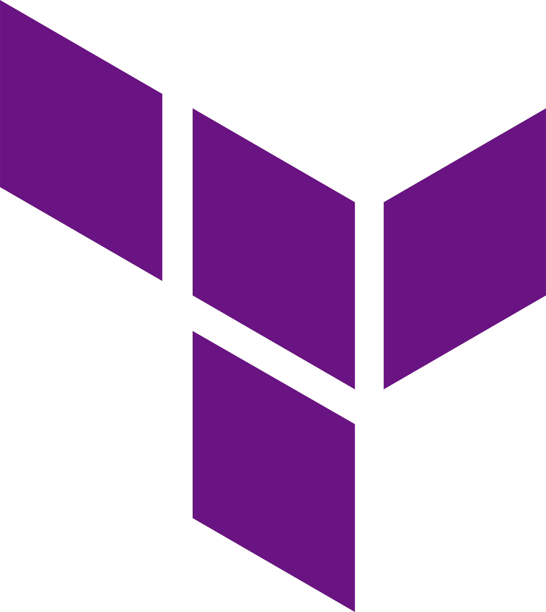

Austin Arlint
DevSecOps Engineer | Cloud Kubernetes Specialist
build Technical Skills

Kubernetes - Container Orchestration

Docker - Containerization

Terraform - Infrastructure as Code
AWS - Cloud Platform
NodeJS - JavaScript Runtime
GitHub - Version Control

Python - Programming Language

Ansible - Automation

Django - Web Framework
work Professional Experience
- Senior DevOps Engineer - RAFT (2023 - Present)
- Managed Kubernetes clusters across AWS, EKS, and Standalone Rancher.
- Developed and maintained CI/CD pipelines for feature changes and deployments.
- Led feature changes for staging and production environments.
- Managed HashiCorp Vault for secure feature deployments.
- Maintained zero-downtime migration from CNAP to P1 Common Services for Keycloak Identity Management.
- Responsible for BigBang deployments and upgrades.
- Senior Application Developer - NTT (2019 - 2023)
- Developed multiple containerized applications using NodeJS, GoLang, Python, and Django.
- Deployed and managed hundreds of Kubernetes clusters using Rancher across AWS, EKS, and Standalone deployments.
- Managed AWS infrastructure using Terraform for production and staging environments.
- Maintained and upgraded feature deployments using CI/CD pipelines.
- Integrated Ansible playbooks with Jenkins to reduce deployment times.
- Senior Application Developer and Operator - NTT (2016 - 2019)
- Designed and maintained automation for over 1500 systems, using Ansible and GitOps (Windows/Linux).
- Developed platform automation in Django using containers, Rancher, and AWS.
- Created CI/CD pipelines using GitHub Actions for core DevOps systems.
build Technical Skills
- code Proficient in Kubernetes, Docker, and Rancher for managing containerized applications.
- settings Skilled in automation and scripting for container management.
- computer Expertise in managing CI/CD, GitOps, and GitHub Actions.
- language Programming languages: Python, GoLang, Ansible, NodeJS.
- cloud Cloud Platforms: AWS, Azure, GCP.
star Specialties
- 10+ years of professional experience in DevOps and system automation.
- Senior DevSecOps Engineer with a deep understanding of Kubernetes and cloud environments.
school Education
- Bachelor of Science in Information Systems Management - Utah State University (2009 - 2013)
- Security +